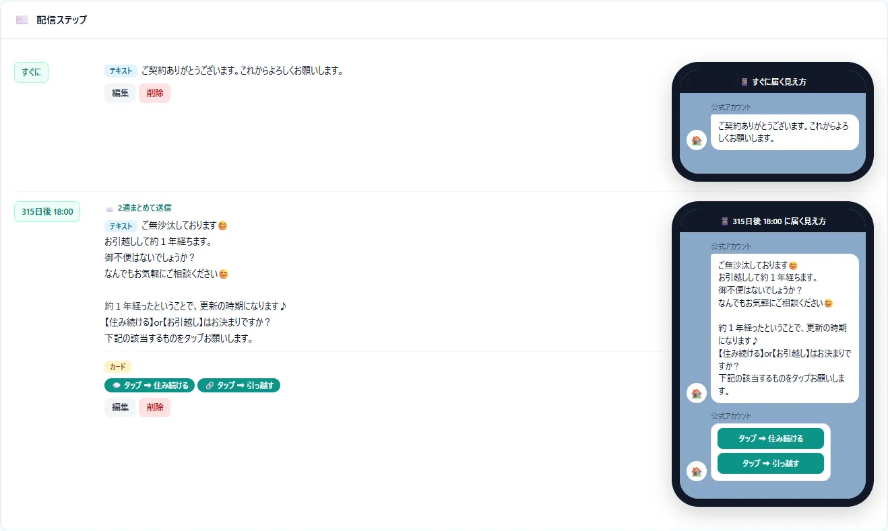

こんな困りごとに
- 友だち追加のあと、フォローの連絡が続かない
- 更新案内など、何年も先の連絡を忘れてしまう
- お知らせを送るたびに、手作業で送り分けている
この機能でできること
- 友だち追加やタグをきっかけに、何日後の何時に何を送るかを決めて自動配信
- テキスト・画像・ボタン付きのカードを、1回に最大5通まとめて送信
- 友だち全員や、タグで絞った人に一斉配信（日時の指定もできる）
メニューの場所左メニュー「LINE連携 › ステップ配信／一斉配信」
!オプション機能です
LINE連携はオプションです。
ご利用の条件は、お気軽にお問い合わせください。
使い方（3ステップ）
-
1
公式LINEをつなぐ（最初の1回だけ）
「LINE連携」の設定の案内に沿って、公式LINEをミエルームにつなぎます。所要時間は10〜15分ほどで、最初に1回だけ行います。
-
2
シナリオを作る
「LINE連携 › ステップ配信」でシナリオを作り、きっかけ（友だち追加したとき／タグが付いたとき）を選びます。続けて「きっかけから730日後（2年後）に更新案内」のように、配信のタイミングと本文を登録します。本文に {name} と書くと、お客様の名前に置き換わります。
-
3
中身を仕上げて動かす
メッセージはテキスト・画像・カード（ボタン付き）から選べ、右の携帯の画面で、届いたときの見え方を確かめられます。あとは、きっかけのタグを付けるだけで、決めた日時に自動で届きます。

よくある質問
お客様から返信があったら、配信を止められますか？
シナリオの設定で「返信があったら以降の配信を止める」をオンにできます。止まるのは、そのシナリオのメッセージをすでに1通以上受け取った人と、次の配信が7日以内の人です。更新の案内のように、ずっと先の配信は止まりません。
配信すると、LINEのメッセージ通数を使いますか？
使います。配信には、LINE公式アカウントのメッセージ通数を使います（本文と画像は2通として数えます）。ブロックされている友だちには送られません。